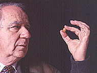
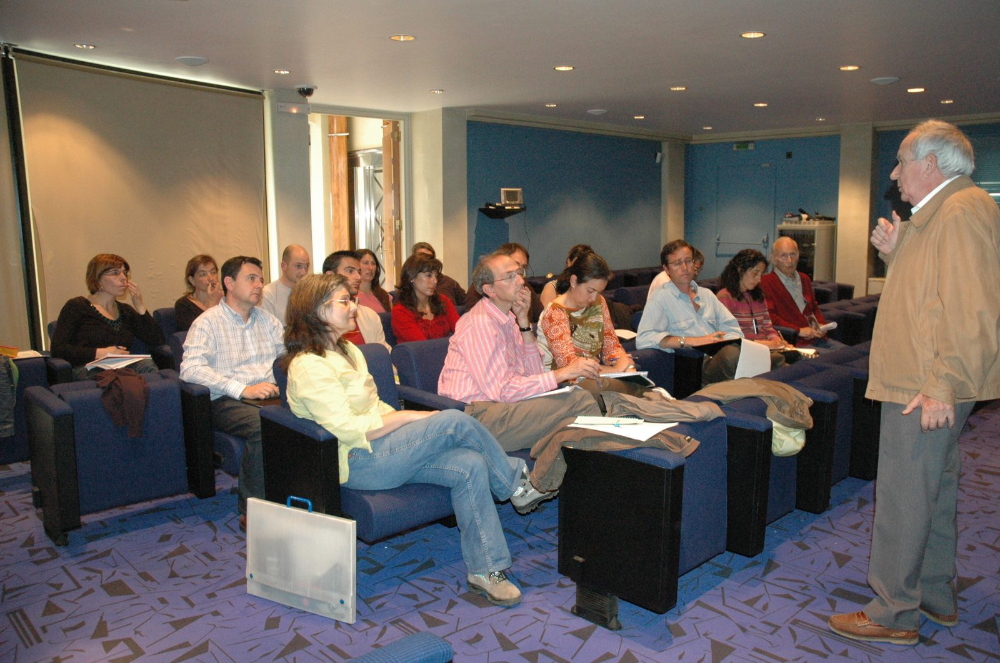

History of the Bank
From a small collection of crucifer seeds to one of the oldest and most diverse wild-species germplasm banks in the world.

The “César Gómez Campo” Plant Germplasm Bank of the UPM (BGV-UPM) is a singular facility located at the ETS of Agronomic, Food and Biosystems Engineering (ETSIAAB). As a member of the Collections Network of the National Plant Genetic Resources Programme and of the Spanish Network of Wild Plant Germplasm Banks and Native Phytoresources (REDBAG), its mission is to contribute to the conservation of Spain’s phytogenetic resources and to serve the national and international scientific community, as well as any companies that require its material, under the terms established by Royal Decrees 429/2020 and 124/2017.
The crucifer collection and the new paradigm of ex situ conservation
BGV-UPM was founded in 1966 to conserve a small collection of crucifer (Brassicaceae) seeds left over from experiments that professor César Gómez Campo (CGC) had carried out at the El Encín estate as a researcher at the National Institute for Agricultural Research (INIA). Between 1960 and 1963, CGC assembled a collection of some 60 accessions of different plant species, mostly wild species of the tribe Brassiceae, to study their response to ionising radiation. Many were collected from plant communities in central Spain; others were sent from botanical gardens. These seeds, or their F1 offspring, were the origin of today’s BGV-UPM.
That incipient collection grew rapidly thanks to a large number of collecting missions in the years when CGC combined his research duties at INIA with teaching responsibilities at the Madrid School of Agricultural Engineering (ETSIA). The 1965 (Andalusia, southern Aragón, Canary Islands) and 1966 (Murcia, Alicante, Canary Islands) missions brought 812 accessions into BGV-UPM, which, together with the 60 from the INIA project, form the founding material of BGV-UPM — the world’s first plant germplasm bank devoted to wild species.
This pioneering bank inaugurated a new paradigm of ex situ conservation. It differed from existing cultivated-seed banks in three respects: the type of material conserved, the methods and places of collection, and the conservation method itself. Since wild germplasm is far more diverse and poorly known than cultivated germplasm, ex situ conservation had to be reoriented toward very-long-term conservation, resting on two pillars: the ultra-drying of seeds and their storage in highly hermetic containers to prevent rehydration. After testing many types of container, CGC selected the one that guaranteed the greatest hermeticity: the flame-sealed glass tube, inside which a humidity indicator was placed alongside the seeds. This method of conservation, although more laborious than the standard methods of the time, guaranteed the sought-after very-long-term conservation.
Collecting expeditions did not stop. The 1967 (central Morocco, Canary Islands, Pyrenees), 1968 (northern and north-eastern Morocco), 1970 (northern Algeria, Mallorca), 1971 (central Algeria, Tunisia), 1972 (Morocco) and 1975 (southern Iberian Peninsula, central Morocco, north-western Algeria, Algiers, southern Algeria) missions added [figure to be completed] further accessions to the collection. Outside the Mediterranean region, also in 1975, CGC travelled through Iran and, over 20 days, collected 109 accessions — genetic material close to the Mediterranean gene pool, but with interesting peculiarities from originating in the Irano-Turanian biogeographic region, characterised by winters and summers with more extreme temperatures than those of the Mediterranean region.
BGV currently holds nearly 1,000 species of the Brassicaceae family in more than 5,000 accessions. It is considered one of the most diverse crucifer collections in the world.

The collection of Spanish endemics
If the 1960s were the years of the crucifer collection, the 1970s would prove key to building the endemics collection. In 1973, when CGC left INIA to become a full-time professor at UPM, BGV-UPM was still the only seed bank in Spain. Aware of the enormous responsibility this entailed, and of the urgent need to extend the conservation effort to any rare Iberian, Balearic or Macaronesian endemic species, CGC launched Proyecto Artemis, which involved nearly 100 collaborators — many expert botanists, but also citizens who voluntarily supported its mission. At a time when the very concept of “citizen science” did not yet exist, CGC had already put it into practice.
Largely thanks to this initiative, BGV-UPM today holds around 1,400 accessions of Iberian, Balearic and Macaronesian endemics, covering 24 % of Spain’s threatened flora.
This collection was conceived as a backup copy to support eventual in situ conservation actions. The case of Diplotaxis siettiana is a good example: a species endemic to the island of Alborán that became extinct in the wild and was recovered thanks to the seeds kept at BGV-UPM. The endemics collection has also underpinned numerous taxonomic and applied studies, such as one carried out in collaboration with the Royal Botanical Garden of Madrid on propagating endemic species with horticultural potential.
The collection of crop wild relatives (CWR)
In the 1980s, CGC took on a new challenge without abandoning the previous two. Fully aware that Europe is a centre of origin and diversity for the most important cultivated crucifers — cabbages, kales and their relatives (Brassica oleracea) —, CGC decided to undertake, under the sponsorship of the International Board for Plant Genetic Resources (IBPGR, today Bioversity International), the large-scale incorporation into BGV-UPM of seeds from the wild relatives of cultivated Brassica oleracea.
For this he prepared two collecting plans focused on the Mediterranean basin. The first covered Attica, the Peloponnese, the islands of Euboea and Crete in Greece; southern Italy and Sicily and the north-eastern Mediterranean coast of Italy; Sardinia and Corsica; Cyprus; Tunisia; southern and north-western France; the Cantabrian coast and north-eastern Spain; and southern United Kingdom. The second was carried out in Turkey (eastern Anatolia, the Black Sea coast, the Mediterranean coast) in 1983, with support from Tohoku University in Japan. Years later, in 2002, new wild populations of B. oleracea were surveyed in the north of the Iberian Peninsula, from Asturias to the Basque Country, and of B. montana on the Costa Brava.
More recently, BGV-UPM has expanded this line by incorporating CWR germplasm conserved in genetic reserves. Between 2019 and 2023, seeds were collected in situ from 42 populations in the Sierra del Rincón Biosphere Reserve (Madrid) and the Meseta Ibérica Transboundary Biosphere Reserve (Salamanca).
Approximately 50 % of the CWR species listed in the National Strategy for the Conservation and Use of Crop Wild Relatives and Wild Food Plants (MAPA, 2022) are conserved at BGV-UPM. Of the CWR that are also wild food plants (WFP), around 75 % are conserved; of the WFP that are not CWR, around 65 %.